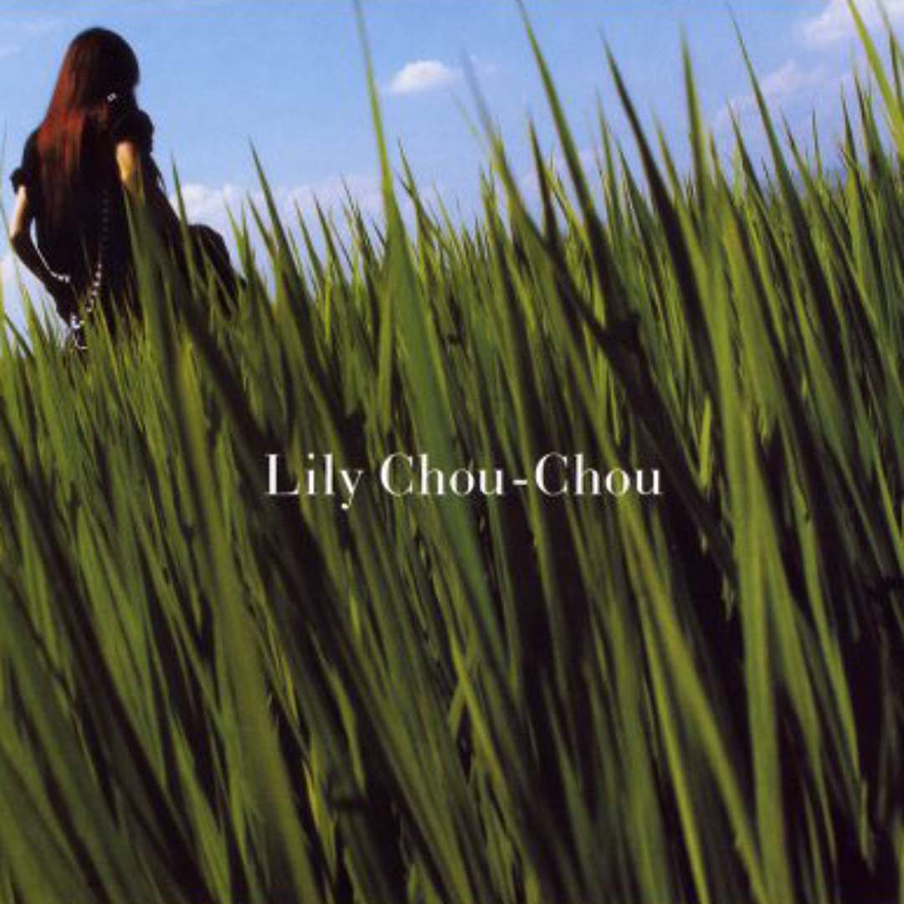

The music of Lily Chou-Chou, composed by Takeshi Kobayashi with vocals by Salyu. An album titled Kokyū (Breath) — ethereal, haunting, and alive with the Ether.

The debut album of Lily Chou-Chou, released October 17, 2001. A blend of ethereal J-pop, indie textures, and reimagined classical compositions by Debussy. Produced by Takeshi Kobayashi, the album serves as both the film's soundtrack and a standalone musical experience that blurs the line between fiction and reality.
Full Tracklist
アラベスク
Based on Debussy's "Arabesque No. 1," this opening track layers Lily's ethereal vocals over synthesized piano and lo-fi drums, creating one of cinema's most captivating opening sequences.
愛の実験 — Experiment of Love
A slow-burning meditation on love as an experiment — tentative, uncertain, and fragile. The layered production mirrors the emotional distance between the film's characters.
エロティック
Despite its title, this track carries an aching vulnerability rather than sensuality. Gentle guitar lines weave through Salyu's voice as it drifts between whisper and cry.
飛行船 — Blimp
A brief, floating interlude. The imagery of a blimp drifting overhead evokes the feeling of watching life pass by from a distance — detached yet strangely peaceful.
回復する傷 — Healing Wounds
Later featured in Quentin Tarantino's Kill Bill Vol. 1, this track carries a quiet intensity — the promise of recovery wrapped in melancholy. Wounds that heal still leave scars.
飽和 — Saturation
Saturation — the point where you cannot absorb any more. This track captures the emotional overload of adolescence, when every feeling is too much and too real.
飛べない翼 — Flightless Wings
Wings that cannot fly — a metaphor running through the entire film. The desire for freedom trapped by circumstance. Lyrics co-written by director Shunji Iwai himself.
共鳴（空虚な石）— Resonance (Empty Stone)
Resonance from emptiness. This single was performed on national TV by Salyu in 2000, bringing Lily Chou-Chou into reality before the film even existed.
グライド
The most iconic track. Accompanying the film's famous rice field scene, "Glide" is pure Ether — a song that lets you float above everything. Later covered by Mitski for the film After Yang.
> When I listen to Lily, the grey fades away.
> Even if just for a moment,
> the Ether wraps around me and everything is bearable.
— Philia @ Lilyholic BBS